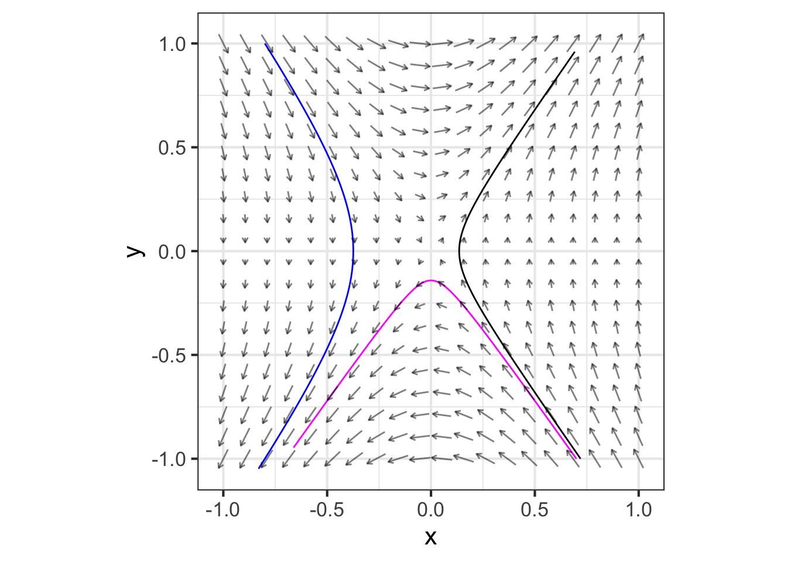
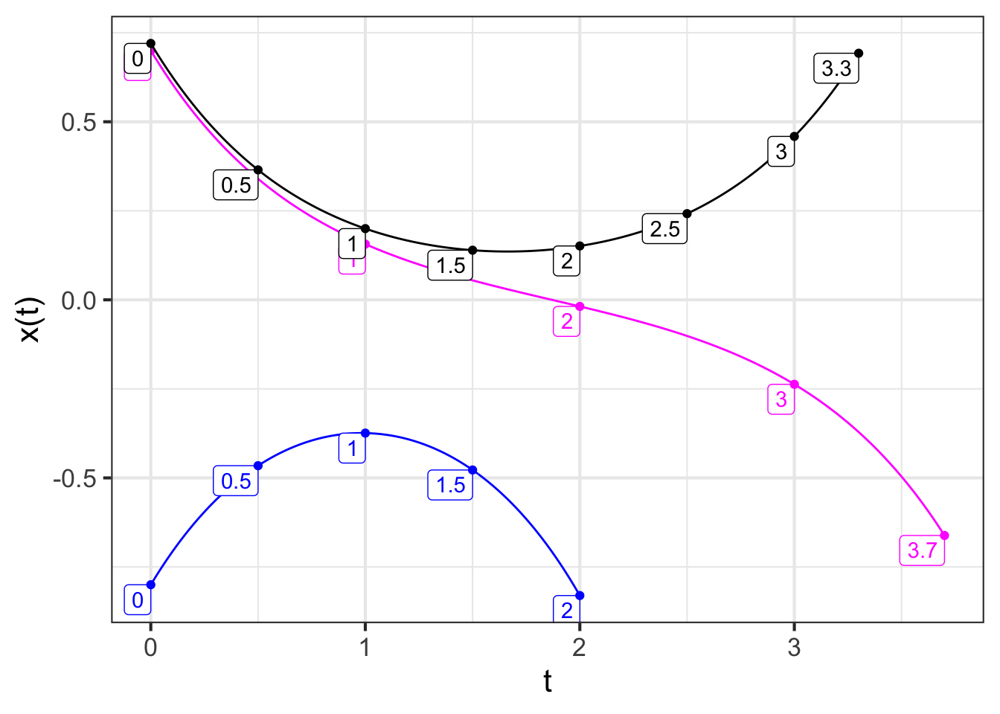

44 Equilibrium and transient
Many of the natural and constructed objects and systems that we encounter—buildings, bridges, airplanes, the orbits of satellites, heating systems, birds in flight, and so on—are more fully understood if seen as dynamical systems. That may seem strange; a building does not move (we hope!), an airplane stays in steady flight, the seasons have been steady in their progression for as long as records have been kept. And yet … a building might be shaken and even destroyed by an earthquake, airplanes require pilots and control systems for steady flight. Even satellites in far Earth orbit can drift from their desired positions and attitudes and require control corrections.
A system is said to be in steady state when it stays put, unchanging. Another term often used to express such constancy is equilibrium which occurs when the various forces or processes acting on the system balance out. In the language of dynamical systems, the equilibrium state of a system is called a fixed point. Mathematically, this is a coordinate in the state space where all the right-hand sides of the differential equations equal zero. For a two-dimensional system with dynamics \[\partial_t x = f(x, y)\\\partial_t y = g(x,y)\ ,\] a fixed point will be a particular value for the state which we will write as \((x^\star, y^\star)\) where both \(f(x^\star, y^\star) = 0\) and \(g(x^\star, y^\star) = 0\).
An important vocabulary word in dynamics is transient. In everyday speech, this means something like “just passing through.” it is the same in dynamics: that part of the trajectory which precedes stable, fixed behavior such as at a fixed point. Transients occur whenever a dynamical system has an initial state not on a stable, fixed state. They are also common in systems that are disrupted by some external force, for example in the recovery of an electrical power distribution grid after a disturbance such as an ice storm. After a sharp bang, the ringing in your ears is a transient. When you stand up too suddenly, the “stars” you see are a transient due to diminished blood flow. Turn on an oven? The transient is the warming up until the oven reaches the temperature setting.
Although transients are … Well, transient, they can be very important. Key to the Wright Brothers success was their recognition that air turbulence elicits transients in attitude and that aircraft need control systems that can work fast enough for the craft to survive the transient. If you have driven a car with a broken suspension, you will know that it can be hard to control after the transient caused by hitting a bump in the road.
Small disturbances often elicit transients that decay away exponentially. Such transients, like all exponentially decaying processes, can be characterized by a half life: the time it takes the transient to shrink to half its original value. (Not all transients decay exponentially, but that is a story for another course.)
In this chapter, we will study the quantitative response to dynamical systems with a fixed point when the state is perturbed by some outside force. Our focus will be on linear or linearized dynamical functions, which are generally an excellent description of dynamics near a fixed point.
44.1 One state variable
Linear systems with one state variable have simple dynamics:
\[\partial_t y = k y\] which has a fixed point at \(y^\star = 0\). Even dynamics like \(\partial_t x = k x + b\) can be easily transformed into this simple form; the fixed point is \(x^\star = - b/a\) and defining \(y \equiv x - x^\star\) gives the \(\partial_t y = k y\) form.
The solution is also simple: \(y(t) = y_0\ e^{kt}\), where \(y_0\) is the initial condition on \(y\). If the parameter \(k < 0\), the dynamics are exponential decay to the fixed point. If \(0 < k\), the dynamics are exponential growth away from the fixed point.
44.2 Two state variables
If the state variables \(x\) and \(y\) are measured with respect to a fixed point, the differential equation of the linear or linearized system is: $$_t x = a x + b y\
_t y = c x + d y$$
Exponentials are an important form of ansatz for linear differential equations. To show why, let’s review the solution to \(\partial_t x = k x\), but assume that all we know is that the solution is an exponential function of time: \(x(t) = A e^{\lambda t}\) and that we don’t yet know the parameters \(A\) or \(\lambda\). As usual for an ansatz, we plug it into both sides of the differential equation, giving \[\partial_t A e^{\lambda t} = k A e^{\lambda t}\ \ \implies \lambda A e^{\lambda t} = k A e^{\lambda t}\ \ \implies \lambda = k\ .\] Now we know the value of \(\lambda\).
What about \(A\)? Evaluate the solution at \(t=0\). This gives \(x(0) = A e^{\lambda 0} = A\). So we know \(A\) is the initial condition \(x(0)\) (which we usually abbreviate \(x_0\)).
We will try the same approach with the two-state variable system, but we will start with a special case where some of the parameters \(a, b, c\), and \(d\) are zero.
\[\text{Simplification:}\ \ \ \ \ \begin{array}{l}\partial_t x = \cancel{ax} + b y\\\partial_t y =\ c x + \cancel{dy}\end{array}\ .\]
In the spirit of exponential ansatze, we might try \[x(t) \equiv C e^{\lambda_1 t} \ \ \text{and}\ \ \ y(t) \equiv D e^{\lambda_2 t}\ .\]
But this is unnecessary complexity. To see why plug the ansatze in to the first differential equation to get \[\lambda_1 C e^{\lambda_1 t} = b D e^{\lambda_2 t}\ .\] This can be true only if \(\lambda_1 \= \lambda_2\) because exponentials with different half-lives cannot be proportional to one another.
If \(x(t)\) and \(y(t)\) are proportional to one another, then we hardly need to keep track of both. In fact, we need just one differential equation in \(x(t)\). To turn the system of differential equations into a single differential equation we will take the derivative with respect to time of both sides of the top equation, giving:
\[\partial_{tt} x = b\, \partial_{t\ }y\\ \partial_{t\ } y = c\, x \] Substitute in the value for \(\partial_t y\) from the bottom equation to get a single, second-order differential equation:
\[ \partial_{tt} x = b\, c\, x\ .\]
Plug in the usual ansatz, \(x(t) = A e^{\lambda t}\) to get
\[\lambda^2 A e^{\lambda t} = b\,c\, A e^{\lambda t}\ \ \ \implies\ \ \ \ \lambda = \pm \sqrt{\strut b\,c}\]
The \(\pm\) is the interesting part here. If, say, \(b=1\) and \(c=1\), there are two values for \(\lambda\) that will be consistent with the differential equation: \(\lambda_1 = 1\) and \(\lambda_2 = -1\). Either of these will produce a solution that satisfies the differential equation: \(x_1(t) = A e^{\lambda_1 t}\) or \(x_2(t) = B e^{\lambda_2 t}\). So which of the two possibilities is it?
Since everything about the differential equation is linear, any linear combination of the two possibilities will also satisfy the equation. So we can conclude that \[x(t) = A e^{\lambda_1 t} + B e^{\lambda_2 t}\ .\]
Since \(\lambda_2 = -1\), we know that the \(B e^{\lambda_2 t}\) component of the linear combination will decay to zero. That is, \(B e^{\lambda_2 t}\) is the transient part of the solution.
What are \(A\) and \(B\)? That depends on the initial condition. Evaluate both sides of the solution equation at \(t=0\) to get \[x(0) = A e^{\lambda_1 0}+ B e^{\lambda_2 t} = A + B\ .\] At this point, you need to look back at the original system of equations. There are two state variables \(x\) and \(y\) and therefore we need to specify two components of the initial condition. If \(x(0)\) is interpreted as the initial position, then following the example of the pendulum we can look to the velocity \(\partial_t x\) as the second component of the initial condition. From \(x(t)\) we can easily calculate the velocity: \[\partial_t x(t) = \lambda_1 A e^{\lambda_1 t} + \lambda_2 B e^{\lambda_2 t}\ .\] Again, evaluate this at \(t=0\) to get a second equation for the initial condition the pair
\[\begin{array}{c}\partial_t x(0) = \lambda_1 A + \lambda_2 B\\x(0) = \ \ A \ \ + \ B\\\end{array}\ \ \ \ \implies\ \ \ \ \left[\begin{array}{c}\lambda_1 \ \ \ \ \ \lambda_2\\1 \ \ \ \ \ \ 1\end{array}\right] \left[\begin{array}{c}A\\ B\end{array}\right] = \left[\begin{array}{c}\partial_t x(0)\\ x(0)\end{array}\right] .\] From Block 5, we know how to solve such matrix equations. So, given the initial values \(x(0)\) and \(\partial_t x(0)\)—position and velocity—we can find an exact, quantitative solution to the differential equation.
\(\ \)
Figure fig-bc-system shows the flow field, some trajectories and their time series for the system \[\partial_t x = b y\\ \partial_t y = c x\] for \(b=1\) and \(c=2\).

Each of these trajectories starts out by heading toward the fixed point at (0,0). Then, each turns and heads away toward \(\pm \infty\) from the fixed point,

Each of the time series is similar, first showing exponential decay toward 0 then exponential growth toward \(\pm \infty\).
The initial conditions for the black and \(\color{magenta}{\text{magenta}}\) trajectories are very similar. You can imagine a trajectory starting between those initial conditions that would go down the middle of the “trumpet.” This trajectory would be exponential decay toward 0, but would be hard to see since \(x=0, y=0\) is an unstable fixed point (a saddle).
The initial condition for the black trajectory is \(x(0)=0.72\) and \(y(0)=\partial_t x(0) = -1\), while for the \(\color{magenta}{\text{magenta}}\) trajectory it is \(x(0)=0.70\) and \(y(0)=\partial x(0) = -1\). Let’s find each trajectory as a separate linear combination \(A e^{\lambda_1 t} + B e^{\lambda_2 t}\). The equations to solve are \[\left[\begin{array}{c}1 \ \ \ \ 1\\\lambda_1 \ \ \lambda_2\end{array}\right] \left[\begin{array}{c}A\\ B\end{array}\right] = \left[\begin{array}{c}x(0)\\ \partial_t x(0)\end{array}\right] .\]
By plugging in the parameters \(a=0\), \(b=1\), \(c=2\), \(d=0\) in the dynamical functions, we find that \[\lambda = \pm \sqrt{\strut 2} \approx \pm 1.4142 \ .\] Therefore, we solve
\[\left[\begin{array}{c}1.4142 \ \ \ -1.4142\\1 \ \ \ \ \ \ \ \ \ \ \ \ \ \ \ \ 1\end{array}\right] \left[\begin{array}{c}A\\ B\end{array}\right] = \left[\begin{array}{c}\partial_t\,x(0)\\x(0)\end{array}\right] .\]
M <- cbind(rbind(1.4142, 1), rbind(-1.4142,1))
b_black = rbind(-1, 0.72)
b_magenta = rbind(-1, 0.70)
qr.solve(M, b_black)
## [,1]
## [1,] 0.006443219
## [2,] 0.713556781
qr.solve(M, b_magenta)
## [,1]
## [1,] -0.003556781
## [2,] 0.703556781The two trajectories are therefore $$x_(t) = 0.0064 e^{1.4142 t} + 0.7136 e^{-1.4142}\
= -0.00356 e^{1.4142 t} + 0.70356 e^{-1.4142 t}$$ For both trajectories, the initial amplitude of the decaying exponential is much larger than for the growing exponential. That is why the time series decay toward zero initially. As \(t\) grows, the exponential growth become much more important. For the black trajectory, the exponential growth has a positive coefficient, so the growth is toward \(\infty\). But for the \(\color{magenta}{\text{magenta}}\) trajectory, the exponential growth has a negative coefficient, thus that trajectory grows toward \(-\infty\).
The method we used to solve the simplified problem also works for the original problem
\[\begin{array}{c}\partial_t x = ax + b y \\ \partial_t y = c x + dy\end{array}\ .\]
Step 1: Differentiate with respect to \(t\) both sides of the top equation, giving
\[\begin{array}{c}\partial_{tt} x = a\, \partial_t x + b\, \partial_t y\\ \ \ \ \partial_t y = c x \ \ \ \ \ \ \ + dy\ \ \ \ \ \ \ \ \end{array}\ .\]
Step 2: Use the second equation to substitute for \(\partial_t\, y\) in the top equation, giving
\[\partial_{tt} x = a \partial_t x + b\left(\strut c x + dy\right) = a\, \partial_t x + b\, c\, x + b\, d\, y\]
Step 3: One more substitution. From the original top equation, we know \[y = \frac{\partial_t x - a x}{b}\ .\] Plug this in for \(y\) in the result from Step 2, giving
\[\partial_{tt} x = a\, \partial_t x + b\, c\, x + b\, d\, \frac{\partial_t x - a x}{b} = \left(\strut a + d\right)\ \partial_t x + \left(\strut b c - a d\right)\]
Step 4: Use the ansatz \(x(t) = e^{\lambda t}\). This produces
\[\lambda^2 e^{\lambda t}= (a + d) \lambda e^{\lambda t}+ \left(\strut bc - ad\right)e^{\lambda t} \ \ \ \implies\ \ \ \lambda^2 = (a + d) \lambda + \left(\strut bc - ad\right)\] which can be solved for \(\lambda\):
\[\lambda = \frac{1}{2}\left(a + d\right) \pm \frac{1}{2}\sqrt{\left(a - d\right)^2 - 4 b c}\]
Again, the \(\pm\) is the interesting bit here. There are two simple solutions that satisfy the differential equation: \(x_1(t) = e^{\lambda_1 t}\) and \(x_2(t) = e^{\lambda_2 t}\). In addition, any linear combination \(A e^{\lambda_ t} + B e^{\lambda_2 t}\) of these simple solutions will satisfy the differential equations. Once we know \(\lambda_1\) and \(\lambda_2\), the situation is identical to the simplified version. Again, knowing the initial condition \(x(0)\) and \(\partial_t x(0)\) allows us to find the coefficients in the linear combination by solving the matrix equation \[\left[\begin{array}{c}\lambda_1 \ \ \ \lambda_2\\1 \ \ \ \ \ 1\end{array}\right] \left[\begin{array}{c}A\\ B\end{array}\right] = \left[\begin{array}{c}\partial_tx(0)\\ x(0)\end{array}\right] .\]
44.3 Exercises
Exercise 44.03
We have seen that the solution \(x(t)\) to the linear dynamical system in two state variables
\[\begin{array}{c}\partial_t x = ax + b y \\ \partial_t y = c x + dy\end{array} = \left[\begin{array}{cc}a & b\\c & d\end{array}\right] \left[\begin{array}{c}x\\y\end{array}\right]\]
can be written as a linear combination of two exponentials:
\(x(t) = A e^{\lambda_1 t} + B e^{\lambda_2 t}\).
Let’s call the two components of this linear combination the “A-part” and the “B-part.”
In each of the following, you are given two specific numerical values for \(\lambda_1\) and \(\lambda_2\). Your task is to determine whether the A-part or the B-part (or both or neither) is transient.
Part A For \(\lambda_1 = -1\) and \(\lambda_2 = -0.5\), which parts are transient?
A-part B-part both parts neither part
Part B For \(\lambda_1 = -0.01\) and \(\lambda_2 = 0.01\), which parts are transient?
A-part B-part both parts neither part
Part C For \(\lambda_1 = 0.01\) and \(\lambda_2 = -0.3\), which parts are transient?
A-part B-part both parts neither part
In answering the next two questions, keep in mind that for large \(t\), \[A e^{\lambda_1 t} + B e^{\lambda_2 t} \approx A e^{\lambda_1 t}\ \ \text{when}\ \ \lambda_2 < \lambda_1\ .\]
Part D For \(\lambda_1 = 0.01\) and \(\lambda_2 = 0.001\), which parts are transient?
A-part B-part both parts neither part
Part E For $_1 = -0.1 $ and \(\lambda_2 = -0.001\), which parts are transient?
A-part B-part both parts neither part
Exercise 44.05
The linear dynamical system in two variables is
\[\begin{array}{c}\partial_t x = ax + b y \\ \partial_t y = c x + dy\end{array} = \left[\begin{array}{cc}a & b\\c & d\end{array}\right] \left[\begin{array}{c}x\\y\end{array}\right]\ .\]
The matrix abcd can be turned into two values, \(\lambda_1\) and \(\lambda_2\) such that $x(t) = A e^{_1 t} + B e^{_2 t}. Use the formula for \(\lambda\) in the text to find \(\lambda_1\) and \(\lambda_2\) for each of the following:
\(\left[\begin{array}{rr}1 & 1\\0 & 2 \end{array}\right]\)
\(\left[\begin{array}{rr}1 & 1\\1 & 2 \end{array}\right]\)
\(\left[\begin{array}{rr}-1 & 1\\0 & -2 \end{array}\right]\)
\(\left[\begin{array}{rr}-1 & 1\\1 & -2 \end{array}\right]\)
\(\left[\begin{array}{rr}-1 & 1\\0 & 2 \end{array}\right]\)
\(\left[\begin{array}{rr}0 & 1\\-1 & -1 \end{array}\right]\)
Exercise 44.07
For the two-state variable linear dynamical system
\[\begin{array}{c}\partial_t x = ax + b y \\ \partial_t y = c x + dy\end{array} = \left[\begin{array}{cc}a & b\\c & d\end{array}\right] \left[\begin{array}{c}x\\y\end{array}\right]\]
the solution can be written as a linear combination of exponentials
\[x(t) = A e^{\lambda_1 t} + B e^{\lambda_2 t}\ .\]
For each of the following systems and initial conditions, find the coefficients \(A\) and \(B\).
\(\left[\begin{array}{rr}1 & 1\\0 & 2 \end{array}\right]\) with \(x(0) = 3\) and \(\partial_t x(0) = 1\).
\(\left[\begin{array}{rr}1 & 1\\0 & 2 \end{array}\right]\) with \(x(0) = 3\) and \(\partial_t x(0) = -1\).
\(\left[\begin{array}{rr}1 & 1\\0 & 2 \end{array}\right]\) with \(x(0) = -3\) and \(\partial_t x(0) = -1\).
\(\left[\begin{array}{rr}-1 & 1\\0 & -2 \end{array}\right]\) with \(x(0) = 0\) and \(\partial_t x(0) = 5\).
\(\left[\begin{array}{rr}-1 & 1\\1 & -2 \end{array}\right]\) with \(x(0) = 5\) and \(\partial_t x(0) = 0\).
Exercise 44.09
For the linear dynamical system in two state variables
\[\begin{array}{c}\partial_t x = ax + b y \\ \partial_t y = c x + dy\end{array} = \left[\begin{array}{cc}a & b\\c & d\end{array}\right] \left[\begin{array}{c}x\\y\end{array}\right]\]
the two values of \(\lambda\) are \[\lambda_1 = \frac{1}{2}\left(a + d\right) + \frac{1}{2}\sqrt{\left(a - d\right)^2 - 4 b c}\\\lambda_1 = \frac{1}{2}\left(a + d\right) - \frac{1}{2}\sqrt{\left(a - d\right)^2 - 4 b c}\]
Show that the sum \(\lambda_1 + \lambda_2 = a + d\).
Show that the square of the difference \(\left(\lambda_1 - \lambda_2\right)^2 = (a - d)^2 - 4bc\).
These two facts provide the path to finding a set of values \(a, b, c, d\) that will generate any given set \(\lambda_1\) and \(\lambda_2\). First, pick any \(a\) and \(d\) to match the sum, then use these values in the formula for the square of the difference to choose an appropriate \(b\) and \(c\).
Find an appropriate set \(a, b, c, d\) to give \(\lambda_1 = 4\) and \(\lambda_2 = -2\).
Find an appropriate set \(a, b, c, d\) to give \(\lambda_1 = -1\) and \(\lambda_2 = 1\).
Find an appropriate set \(a, b, c, d\) to give \(\lambda_1 = -2\) and \(\lambda_2 = 2\).